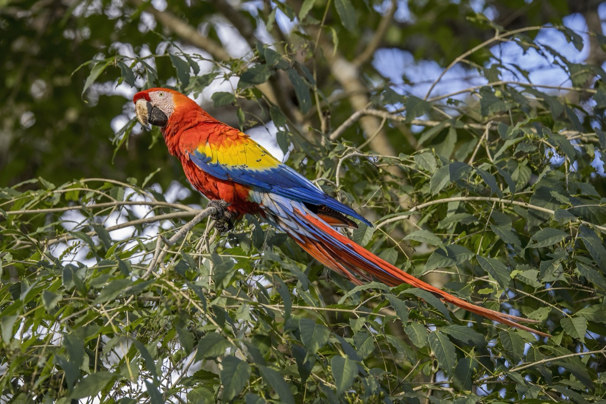
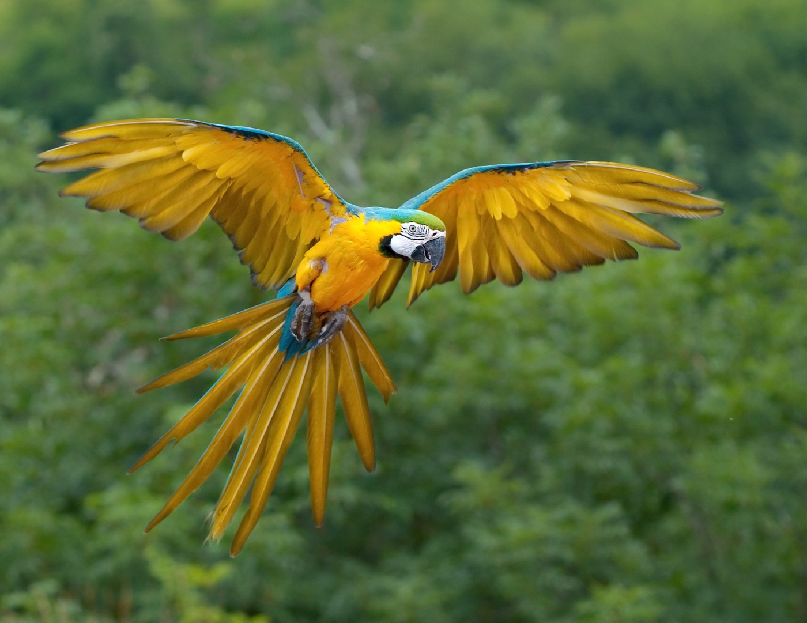
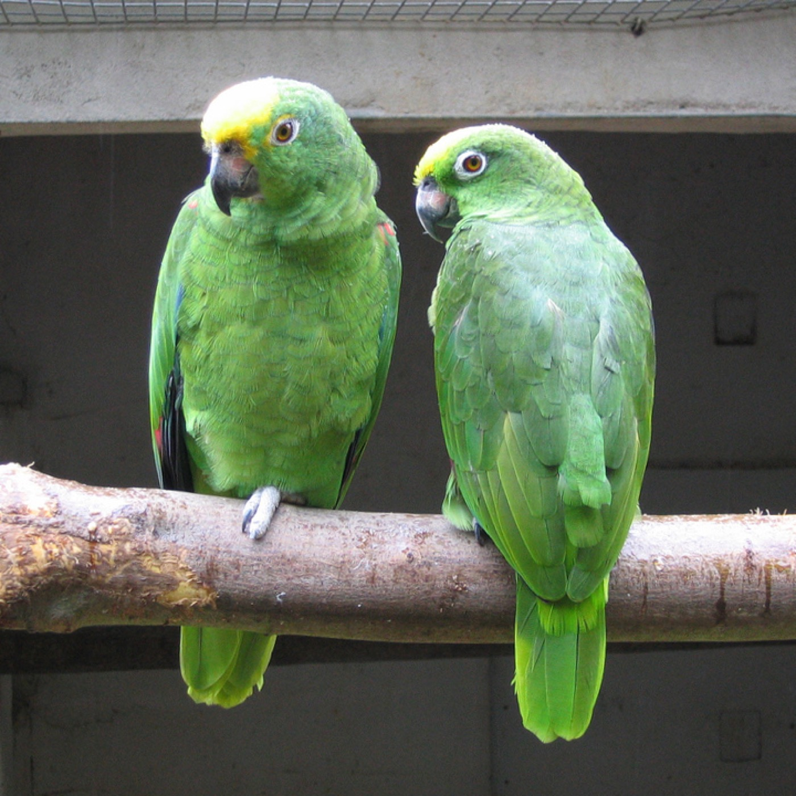
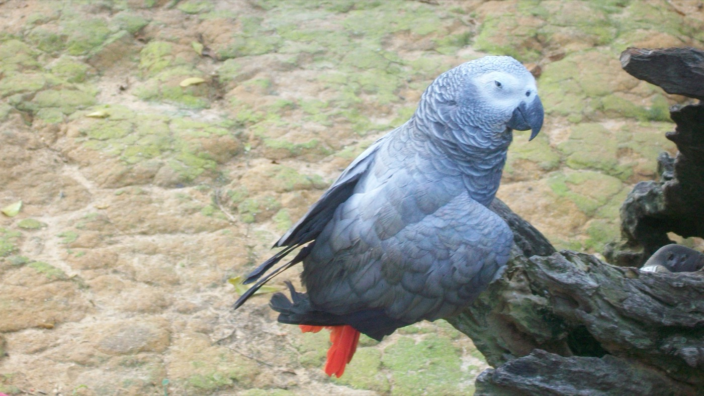
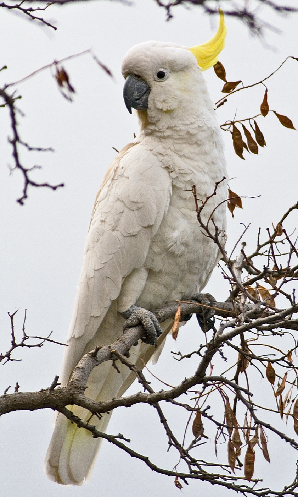

Guacamayo rojo
Ara macao
Grande y muy colorido: rojo, amarillo y azul. Vive en la selva. 🌎
Hoy aprendemos juntos sobre los loros y todos sus colores 🦜


Pertenece al grupo de los Psittaciformes. Tiene plumas, pico, alas y muchos colores.
🔎 Especie: Ara ararauna (Guacamayo azul y amarillo)
Los loros tienen plumas muy coloridas. Cada especie puede tener colores diferentes. 🌈

Los loros tienen un pico fuerte y curvado que usan para comer, trepar y explorar. 🥜
🔎 Especie: Amazona ochrocephala (Loro de cabeza amarilla)
Algunos loros pueden aprender a imitar sonidos y palabras.
🔎 Especie: Psittacus erithacus (Loro gris africano)
Sus alas les permiten volar. 🕊️
¡Vuelan alto entre los árboles con mucha libertad!
🔎 Especie: Cacatua galerita (Cacatúa de cresta amarilla)
Muchos loros viven en bosques y selvas tropicales, donde encuentran árboles, frutos, semillas y agua. 🌿
Todos son de la familia de los loros (Psittaciformes) 💚

Grande y muy colorido: rojo, amarillo y azul. Vive en la selva. 🌎

Tiene el pecho amarillo y las alas azules. ¡Es enorme! 💙💛

Es verde con la cabeza amarilla. Aprende palabras muy bien. 💛

El más hablador del mundo. ¡Es como Blipii!

Tiene un penacho amarillo que sube y baja. ¡Y sabe bailar! 🎵
¿Conoces un loro? Súbelo y déjanos un saludo 💚
Gracias por ser parte de esta aventura y aprender sobre los loros. 🦜
🦜 Con mucho cariño 🦜
🦜 Cada vuelo es una nueva aventura. 🌿
👀 Ya somos … visitantes en la expo 🦜
📣 ¡Comparte la expo en redes!